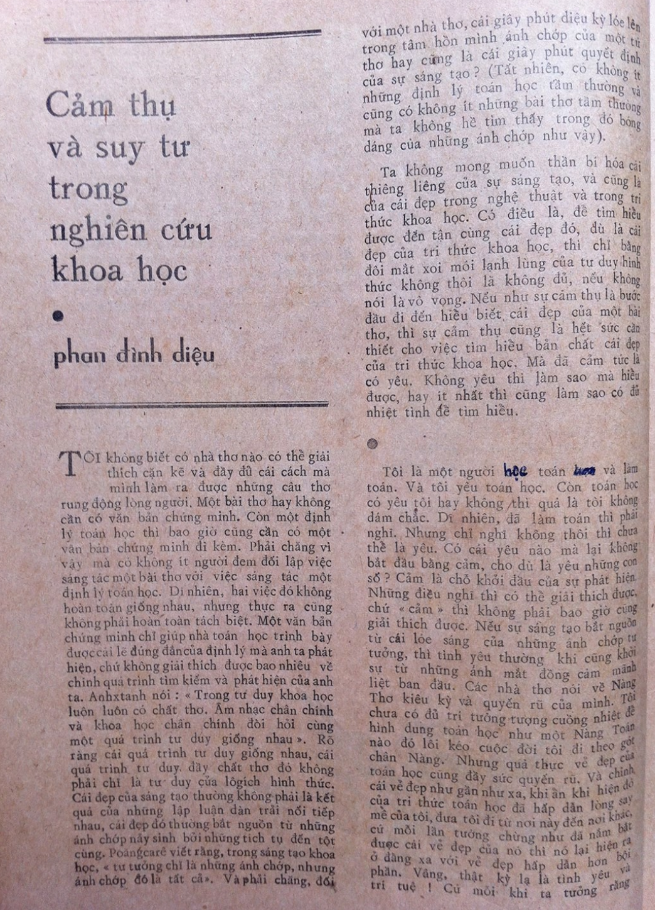

Cảm Thụ Và Suy Tư Trong Nghiên Cứu Khoa Học
Tạp chí “Nghiên cứu Nghệ thuật (42), 1982” — Phan Đình Diệu
Bản gốc có thể xem tại đây

Tôi không biết có nhà thơ nào có thể giải thích căn kẽ và đầy đủ cái cách mà mình làm ra được những câu thơ rung động lòng người. Một bài thơ hay không cần có văn bản chứng minh. Còn một định lý toán học thì bao giờ cũng cần có một văn bản chứng minh đi kèm. Phải chăng vì vậy mà có không ít người đem đối lập việc sáng tác một bài thơ với việc sáng tác một định lý toán học. Dĩ nhiên hai việc đó không hoàn toàn giống nhau, nhưng thực ra cũng không phải hoàn toàn tách biệt. Một văn bản chứng minh chỉ giúp nhà toán học trình bày được cái lẽ đúng đắn của định lý mà anh ta phát hiện, chứ không giải thích được bao nhiêu về chính quá trình tìm kiếm và phát hiện của anh ta. Anhxtanh nói: “Trong tư duy khoa học luôn luôn có chất thơ. Âm nhạc chân chính và khoa học chân chính đòi hỏi cùng một quá trình tư duy giống nhau”. Rõ ràng cái quá trình tư duy giống nhau, cái quá trình tư duy đầy chất thơ đó không phải chỉ là tư duy của lôgích hình thức. Cái đẹp của sáng tạo thường không phải là kết quả của những lập luận dàn trải nối tiếp nhau, cái đẹp đó thường bắt nguồn từ những ánh chớp nảy sinh bởi những tích tụ đến tột cùng. Poăngcarê viết rằng, trong sáng tạo khoa học, “tư tưởng chỉ là những ánh chớp, nhưng ánh chớp đó là tất cả”. Và phải chăng, đối với một nhà thơ, cái giây phút diệu kỳ lóe lên trong tâm hồn mình ánh chớp của một tứ thơ hay cũng là cái giây phút quyết định của sự sáng tạo? (Tất nhiên, có không ít những định lý toán học tầm thường và cũng có không ít những bài thơ tầm thường mà ta không hề tìm thấy trong đó bóng dáng của những ánh chớp như vậy).
Ta không mong muốn thần bí hóa cái thiêng liêng của sự sáng tạo, và cũng là của cái đẹp trong nghệ thuật và trong tri thức khoa học. Có điều là, để tìm hiểu được đến tận cùng cái đẹp đó, dù là cái đẹp của tri thức khoa học, thì chỉ bằng đôi mắt xoi mói lạnh lùng của tư duy hình thức không thôi là không đủ, nếu không nói là vô vọng. Nếu như sự cảm thụ là bước đầu đi đến hiểu biết cái đẹp của tri thức khoa học. Mà đã cảm tức là có yêu. Không yêu thì làm sao mà hiểu được, hay ít nhất thì cũng làm sao có đủ nhiệt tình để tìm hiểu.
***
Tôi là một người học toán và làm toán. Và tôi yêu toán học. Còn toán học có yêu tôi hay không thì quả là tôi không dám chắc. Dĩ nhiên, đã làm toán thì phải nghĩ. Nhưng chỉ nghĩ không thôi thì chưa thể là yêu. Có cái yêu nào mà lại không bắt đầu bằng cảm, cho dù là yêu những con số? Cảm là chỗ khởi đầu cho sự phát hiện. Những điều nghĩ thì có thể giải thích được, chứ “cảm” thì không phải bao giờ cũng giải thích được. Nếu sự sáng tạo bắt nguồn từ cái lóe sáng của những ánh chớp tư tưởng, thì tình yêu thường khi cũng khởi sự từ những ánh mắt đồng cảm mãnh liệt ban đầu. Các nhà thơ nói về Nàng Thơ kiêu kỳ và quyến rũ của mình. Tôi chưa có đủ trí tưởng tượng cuồng nhiệt để hình dung toán học như một Nàng Toán nào đó lôi kéo cuộc đời tôi đi theo gót chân Nàng. Nhưng quả thực vẻ đẹp của toán học cũng đầy sức quyến rũ. Và chính cái vẻ đẹp như gần như xa, khi ẩn khi hiện đó của tri thức toán học đã hấp dẫn lòng say mê của tôi, đưa tôi đi nơi này đến nơi khác, cứ mỗi lần tưởng chừng như đã nắm bắt được cái vẻ đẹp của nó thì nó lại hiện ra ở đằng xa với vẻ đẹp hấp dẫn hơn bội phần. Vâng, thật kỳ lạ là tình yêu và trí tuệ! Cứ mỗi khi ta tưởng rằng ta đã hiểu, thì chân trời của những điều chưa hiểu trước mắt ta lại trải rộng hơn nhiều. Những gì mà tôi hiểu về toán học còn là ít ỏi, dù tôi vẫn luôn mong từ những ít ỏi đó mà cảm thụ được, và hiểu thấu được phần nào cái Đẹp chân chính của toán học.
Tôi yêu toán học từ những con số. Thế giới của những con số thật là huyền ảo và đầy hấp dẫn. Đã có nhiều vẻ đẹp bí ẩn được phát hiện, và còn biết bao nhiêu điều bí ẩn chứa đựng trong dãy số 1,2,3,4,… Số học, vị nữ hoàng của toán học đó, từ hàng ngàn năm nay đã quyến rũ biết bao nhiêu tài năng lỗi lạc. Và sắc đẹp muôn thuở thanh tân của nó vẫn còn đầy hấp dẫn đối với những thế hệ toán học hiện tại và tương lai. Tôi yêu con số nhưng tôi không có mấy may mắn. Vì, ngay từ đầu, tôi đã tò mò muốn tìm hiểu những điều “tầm thường” như số 1 là gì, số 2 là gì,…, mà tôi chẳng sao tìm được câu trả lời. Lan man với những câu hỏi như vậy, tôi đã đi từ số học đến lôgích toán học và cơ sở toán học với hy vọng tìm được sự giải đáp. Và ở đây, lần đầu tiên, ảo tưởng ngây thơ của tôi về cái chính xác tuyệt đối của toán học bị lung lay. Nhưng, cái đẹp ảo ảnh bị tan biến, thì một vẻ đẹp khác, thực hơn, trần tục hơn, đã hiện ra lộng lẫy và say đắm. Và vẻ đẹp đó đã đưa tôi từ cõi mộng trở về cõi thực với nhận thứ ngày càng rõ ràng hơn về tính thực tiễn của toán học. Và tuy lòng đầy kính trọng và ngưỡng mộ đối với các ngành toán học lý thuyết, bản thân tôi đã dần dần đi tới các ngành toán học ứng dụng và khoa học tính toán.
***
Không có gì đúng đắn hơn là $1+1=2$. Toán học lôi cuốn tuổi niên thiếu trước hết bởi sự đúng đắn kỳ diệu gần như tuyệt đối của nó. Một bài văn hay có thể bị thầy chê là dở, chứ một bài toán đúng không thể chấm thành sai. Tôi nhớ hồi còn học phổ thông, thấy các anh chị lớp trên học đến số ảo mà phát thèm. Toán học lại còn cho ta cả cái khả năng tính toán trên những con số không có thực! Và đến khi được học về các thứ hình học phi ơclít, thì sự thích thú thật khó mà tả nổi. Chỉ ở đây, với “sức mạnh” kỳ diệu của toán học, ta mới có quyền gọi một nửa vòng tròn là đường thẳng, thẳng với tất cả mọi tính cách mà ta vẫn dành cho cái thẳng thật.
Tuổi trẻ đam mê bị cuốn hút vào cái thế giới kỳ ảo của những lâu đài với cấu trúc tuyệt đẹp và gần như… thoát tục. Dường như trong cái thế giới này chỉ có sự trong sạch thuần túy của tư duy. Đã có biết bao nhà toán học ca ngợi sự cao quý của “trí tưởng tượng tự do” trong cái thế giới đẹp đẽ này. Ở đây, mọi việc đều rõ ràng, minh bạch, mọi khái niệm đều trong sáng, mọi lý lẽ đều chính xác, đầy sức thuyết phục. Và với đôi cánh đỡ chính xác đó của tư duy lôgích, trí tưởng tượng của ta tha hồ bay bổng đến những miền đất lạ, “siêu thực” của những số ảo, của những vô hạn, của những không gian nhiều chiều, v.v…
Tôi cũng đã từng bị lôi cuốn vào cái thế giới đó với tất cả niềm tin ngây thơ vào sự tuyệt đối “trong sạch” của tư duy. Cuộc sống thực bao giờ mà chẳng có những gồ ghề, mà chẳng có khi chứng kiến những điều không như ý. Và những lúc như vậy, một niềm an ủi tự nhiên chợt đến, hãy trở về với toán học, nơi mà anh có thể được hưởng những giờ phút thảnh thơi của tâm hồn, những giờ phút mà anh có được cái cảm giác là lòng mình trong sạch. Nghĩa là, cũng đã có một thời tôi nuôi trong trí tưởng tượng của mình một hình ảnh đẹp duy lý như vậy về toán học. Và với hình ảnh đó trong tâm trí, tôi lang thang ít nhiều trên những con đường mòn của những học thuyết duy lý và duy tâm về toán học, những chủ nghĩa lôgích, chủ nghĩa hình thức, chủ nghĩa trực giác, v.v…
… Và để rồi đến lúc gặp được định lý Gơđen: toán học không thể tự chứng minh được sự đúng đắn của mình! Một sự vỡ mộng mà cũng là một sự thức tỉnh. Vậy thì ra cái sức mạnh có quyền phán xét toán học là ở ngoài toán học, chứ không phải là ở trong bản thân nó. Một cái đẹp không thể đẹp cho chính mình, mà phải là đẹp cho cuộc đời. Toán học, dẫu qua nhiều thế kỷ có bị bao phủ bởi những màn sương siêu hình hòng tách cái trừu tượng ra khỏi cái cụ thể của cuộc đời, thì xét cho cùng, nó vẫn đã sinh ra từ cuộc sống thực, và vẫn nở hoa kết trái, vẫn tô điểm sắc màu cho chính cuộc sống trần tục của chúng ta.
Tôi nhớ bài thơ Ngư phủ của Khuất Nguyên, trong đó có đoạn Khuất Nguyên trả lời ông thuyền chài: “Mọi người đều say, mình ta tỉnh. Khắp nơi đều đục, mình ta trong”. Và bất ngờ thú vị là cái tủm tỉm cười của ông thuyền chài khi chèo thuyền bỏ đi và hát vang rằng: “Nước Thương Lang trong a. Thì ta giặt khăn đầu. Nước Thương Lang đục a. Thì ta rửa chân vào”.
Xin thứ lỗi cho tôi nếu tôi cảm thụ cái hay của bài thơ theo cách “toán học” của riêng mình. Nhưng phải chăng trong mẩu đối thoại ngắn ngủi đó đã diễn tả khá rõ ràng cái quan hệ giữa ý đồ tự khẳng định từ bên trong với cái sức mạnh phán xét của bên ngoài. Tôi cảm câu thơ Khuất Nguyên để hiểu thêm toán học, Lý thuyết và siêu lý thuyết, toán học và siêu toán học cũng giống như thế này đây. Trong một mình, tỉnh một mình, thì ngay cả cái “trong”, cái “tỉnh” đó cũng không thể được chứng minh. Chỉ có thể được chứng minh khi cái “tỉnh”, cái “trong” đó dấn thân vào, tắm vào và vùng vẫy trong dòng nước trong đục của cuộc đời. Tính chân lý của một lý thuyết chỉ được chứng tỏ bên ngoài lý thuyết đó, chứ không phải tự bên trong lý thuyết đó.
Nhảy vào bên trong để say mê với ảo ảnh của một cái đẹp thuần lý là một bước. Và rồi biết nhảy ra ngoài để nhìn cho thấu kích thước, vị trí của cái đẹp đó, cũng là lại thêm một bước.
Nhìn từ ngoài không phải là nhìn cái vẻ ngoài. Mà nhìn từ ngoài là cách nhìn sáng suốt để thấu tận bên trong. Tôi bắt đầu học cách nhìn đó…
***
Tôi nhớ mãi một câu mà người thầy đáng kính đã quá cố của tôi – giáo sư A. Marơcốp – vẫn thường nhắc: ta có thể để cho trí tưởng tượng của ta bay lên cao bao nhiêu cũng được, nhưng bao giờ cũng cần nhớ tìm con đường từ nơi cao nhất ấy đặt chân trở về mặt đất. Để nhìn cho rõ tầm cao của nơi bay đến cũng như thấy cho tinh chỗ đứng. Đứng tự trong ta mà ngắm ta thì chẳng thể nào ngắm đúng, thường dễ rơi vào một trong hai cực đoan: hoặc tự xem ta là cả vũ trụ, hoặc hoang mang thấy ta chẳng là gì cả. Tự kiêu và tự ti vốn chỉ là một, trong toán học hay trong cuộc đời chắc cũng vậy thôi. Thực ra thì cái chỗ đứng ngoài ta để từ đó mà ngắm ta vốn đã có sẵn, chỉ có điều là trước đó thôi chưa biết rõ đó thôi. Chỗ đứng đó là học thuyết duy vật biện chứng về nhận thức. Tôi xin không nói chuyện triết học trong bài viết ngắn này. Tôi chỉ muốn nói về một khía cạnh của vấn đề: chính là khi anh đã có được một chỗ đứng đúng đắn cho suy tư, thì cái khả năng cảm thụ của anh, cái cách mà anh nhìn, anh cảm, anh yêu cũng sẽ thanh thoát và phong phú hơn nhiều. Mà thực ra thì nào có gì lạ đâu, đó chỉ là cái tự do một khi tất yếu đã được nhận thức thôi mà.
Với cách nhìn đó, ta hiểu cái đẹp của sự trừu tượng toán học một cách chính xác hơn. Sự trừu tượng đó không còn cái vẻ đẹp huyền bí mà ta cung kính tôn thờ, nó cũng không còn là nơi mà ta ấp ủ sự trong sạch thoát tục, bởi vì ta biết rõ nó sinh ra từ trần thế và cũng quay trở về với trần thế. Con đường của nhận thức – con đường từ trực quan sinh động đến tư duy trừu tượng, rồi lại từ tư duy trừu tượng trở về với thực tiễn. Toán học là một chặng đường dài gian nan khúc khuỷu đó. Và như vậy, cái đẹp của toán học đâu phải là cái đẹp vì nó, cho nó; cái đẹp chân chính của toán học chính là cái đẹp vì cuộc đời, cho cuộc đời chúng ta. Trừu tượng đâu phải chỉ để hiểu được cái cụ thể. Toán học nghiên cứu số ảo đâu phải chỉ để nhằm cái ảo, làm toán trên số ảo để nhằm tính ra được số thực. Chỉ có điều là đi từ cái thực đến cái thực, đôi khi phải mượn đường qua cái ảo đó thôi! Cái ảo tự nó đã làm cho ta say mê, thì cái ảo khi bắc được cầu cho những cái thực lại càng đáng say mê hơn nhiều. Nhà tu hành trong thơ Tago sau bao khổ luyện để thoát tục cuối cùng lại chỉ mơ được cô gái hái củi – ôi cái tình yêu trần tục được nhận chân sau bao nhiêu mơ tưởng hão huyền mới đáng quý làm sao!
Từ khi ta hiểu ra cái lẽ giản đơn đó, tôi lại càng yêu toán học. Yêu với một tình yêu thật, một tình yêu gần gũi, chứ không phải vừa yêu vừa sợ. Ta càng yêu nhiều bởi ta hiểu, và bởi hiểu cho nên gắn bó. Sung sướng thay là khi ta biết yêu cái tầm thường trong những trừu tượng xa xôi, và cái sâu sắc cao quý trong những đơn giản tầm thường.
***
Trong toán học, những thứ được xem là tầm thường nhất là những phép toán cộng, trừ, nhân, chia. Rất nhiều bạn học sinh chỉ thích làm toán lý luận chứ khá coi thường cái chuyện cộng, trừ, nhân, chia. Hồi đi học, tôi cũng vậy. Và rồi phải trải qua nhiều cay đắng ngọt ngào để cuối cùng hiểu được cái lẽ hết sức đơn giản là dù có làm toán cao xa đến đâu cũng không thoát khỏi cái tầm thường của các phép tính sơ cấp đó. Trong truyện cổ tích, nhà vua tức giận đuổi cô con gái út để rồi suốt đời ân hận chỉ vì cô công chúa bé bỏng đó dám xem muối là món quà quý giá nhất để dâng tặng vua cha. Có phải mỗi chúng ta đã đều đã hiểu hết cái cao quý của mỗi hạt muối tầm thường mà hằng ngày ta vẫn hằng ăn?
Máy tính điện tử ra đời làm cho toán học trở về với cuộc sống nhanh hơn, và cũng làm cho ta biết quý trọng hơn cái giá trị của những phép cộng trừ tầm thường. Từ trước, người ta đã làm toán mà ngại làm tính là bởi vì người ta không tính được và muốn lảng tránh cái bất lực đó của chính mình. Và cũng chưa lâu, nhu cầu nghiên cứu cái không tính được và cái tính được, cái tính được “có thể” và cái tính được thật sự mới trở thành cần thiết. Trong thế giới của những chuỗi dài tính toán có biết bao nhiêu điều mới lạ được phát hiện. Và hiểu bản chất của sự tính toán sẽ giúp ta hiểu thêm nhiều loại hoạt động khác trong đời sống sản xuất, kinh tế và xã hội của chúng ta.
Máy tính điện tử quả là một phát minh kỳ diệu của loài người. Có nhà khoa học xem rằng, cái vĩ đại của sự phát minh đó chỉ có thể so sánh với sự phát minh ra lửa và ra máy hơi nước trong toàn bộ lịch sử nhân loại. Và đã có một lúc người ta choáng ngợp, để rồi đua nhau bắt máy tính điện tử soạn nhạc, làm thơ, v.v...
Ngành khoa học kỹ thuật ngày nay đã và đang có những bước tiến ghê gớm, chắc chắn sẽ có những ảnh hưởng to lớn đến sự phát triển xã hội trong tương lai. Tôi không bàn về những vấn đề đó mà chỉ xin nói về vài khía cạnh nhỏ bé khác. Người ta cho máy tính làm thơ, soạn nhạc. Những gì mà máy tính làm ra đã thực là nhạc, là thơ hay chưa, hãy dành cho các nhạc sỹ và thi nhân xem xét. Duy có một điều rõ ràng: máy tính là công cụ đầu tiên mà con người đã tạo ra để thay thế mình trong lĩnh vực lao động trí óc. Phần lao động trí óc nào mà máy đã làm thay người được? Xét cho cùng, đó là phần lao động trí óc mà ta vẫn xem là tầm thường và đơn điệu như ghi chép, tính toán, v.v... Và tôi vẫn cứ luôn băn khoăn: không biết trong những hoạt động trí óc cao quý của chúng ta có bao nhiêu phần trăm những hoạt động tầm thường? Phải chăng trong hoạt động thực tiễn của con người, nếu tính về số lượng thì tuyệt đại đa số là những hoạt động “tầm thường”, và chính vì thế mà máy móc trở nên vô cùng hữu hiệu. Tất nhiên, cái trình độ “tầm thường” của máy móc cũng thường xuyên được nâng lên theo trình độ nhận thức của con người, và cái phần không tầm thường dành riêng cho con người cũng sẽ được nâng cao lên. Nghệ thuật mở đường cho sáng tạo khoa học, và rồi khoa học trong khi xâm chiếm thêm những địa hạt vốn có của nghệ thuật lại đồng thời mở rộng những tầm cao mới cho nghệ thuật, phải chăng cũng là thế?
***
Tôi rất thích một câu thơ tình của Tago: “Em biết tất cả đời anh, anh không giấu em một chuyện gì. Ấy chính vì thế mà em không biết gì tất cả về anh”. Có thể tôi thích vì nó diễn tả rất đúng cái khát vọng và cả sự bất lực của mình trong tình yêu toán học. Nhưng nào phải chỉ tình yêu toán học, mà cả trong tình yêu của cuộc đời nữa. Câu thơ có một vẻ ngoài vô lý, ấy thế mà cái vị ngọt của sự có lý tận bên trong, càng ngẫm lại càng thấm vào lòng ta biết bao nhiêu. Cái vị ngọt có thoáng một chút chua cay, nhưng vì vậy mà lại càng ngọt, càng say. Cái đẹp của câu thơ nằm ở nơi sâu thẳm của sự có lý trong những cái tưởng chừng như vô lý. Tưởng chừng thôi, nhưng bởi vì ta quen sống trên cái bề mặt của những tưởng chừng đó, nên không khỏi ngỡ ngàng khi phát hiện ra được đằng sau cái bề mặt đó ánh sáng long lanh của hạt ngọc chân lý.
Trong sáng tạo khoa học, cái đẹp cũng thường được cảm thụ và nhận thức ở những giây phút phát hiện như vậy. Trước một bài toán khó, bao giờ ta cũng lúng túng bước đầu với vô vàn những rối rắm bao quanh. Trên bề mặt của những rối rắm đó, ta gạt ngang rẽ dọc, gỡ mối này chắp mối nọ, và rồi ... đôi khi cái ánh sáng lóe ra lại là từ phía bên kia của bề mặt đó. Ấy là khi ta bắt gặp được cái lõi bản chất của vấn đề, cái lõi ấy chính là hạt ngọc long lanh soi sáng những con đường và xua tan bóng tối của sự rối rắm. Tiếc rằng những giây phút hiếm hoi của hạnh phúc bắt gặp được cái đẹp như vậy không phải là nhiều.
Hàng bao nhiêu thế kỷ, các nhà toán học tìm cách chứng minh định đề Ơclít rất đỗi hiển nhiên “qua một điểm ngoài một đường thẳng chỉ có một đường thẳng song song với nó mà thôi” để rồi cuối cùng phát hiện ra rằng có thể xây dựng những hình học không cần định đề đó. Cũng hàng chục năm, nhiều tài năng toán học đi tìm cách chứng minh sự phi mâu thuẫn của bản thân toán học, để rồi cuối cùng chứng minh được một điều trái ngược, một bất ngờ vĩ đại. Một lý thuyết toán học, nếu nó phi mâu thuẫn, thì tự nó không thể chứng minh được tính phi mâu thuẫn của mình.
Có thể kể ra hàng chuỗi dài của những phát hiện như vậy trong khoa học. Ta nói cái có lý trong cái tưởng như vô lý. Cái phút bất thần chợt hiện ra cái có lý đó chính là khoảnh khắc mà tâm hồn ta tràn ngập ánh hào quang của cái Đẹp phát hiện và sáng tạo. Thực ra thì đây cũng chính là cái lẽ biện chứng của nhận thức. Cái vô lý hình thức vẫn có thể che giấu trong mình mầm xanh của cái có lý biện chứng. Nói “em yêu anh” cũng là yêu, mà nói “em chẳng yêu anh” cũng vẫn có thể là yêu, và biết đâu lại là yêu tha thiết hơn. Bí quyết của những phát hiện và sáng tạo phải chăng là ở chỗ biết nhìn cho thấu được cái “thật” ẩn náu bên trong những lớp mây mù của những có có không không hình thức đó. Sáng tạo trong nghệ thuật hay sáng tạo trong khoa học hẳn cũng đều cần nắm được cái bí quyết chung đó.
Toán học có những cái đẹp của bản thân nó. Nhưng điều quan trọng hơn là, bằng sức mạnh của mình, toán học giúp ta phát hiện, tìm kiếm và nhận biết được những cái đẹp trong cuộc đời. Từ vũ trụ bao la cho đến tận cùng sâu thẳm của những hạt vật chất, từ lĩnh vực hoạt động kinh tế - xã hội cho đến tổ chức của các tế bào sinh vật, toán học luôn cho ta cái khả năng dựng lại trong nhận thức của mình các mẫu hình cấu trúc hài hòa, cân đối của thế giới.
***
Tôi đã đến với toán học bằng hy vọng và niềm tin tuyệt đối vào sự đúng đắn chính xác của nó. Và rồi sau một chặng đường mấy chục năm tìm kiếm, cái điều lớn nhất mà tôi hiểu được, là không hề có cái tuyệt đối đúng đắn đó. Toán học cũng là không toàn vẹn như tất cả mọi thứ không toàn vẹn trên cõi đời này.
Nhưng phải chăng, chính bởi không toàn vẹn nên nó lại càng đẹp, đẹp cái đẹp thực, đẹp cái đẹp cuộc đời.
P.Đ.D